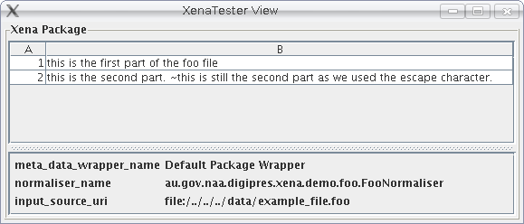

When XenaView object are loaded by the ViewManager, the ViewManager will instantiate an instance of the class and store it in a list. When Xena wants to view a normalised data object, the ViewManager object opens the file, and tries to find the appropriate viewer to use by looking at the opening tag. When the appropriate view is found, Xena will clone the view, and return it, so as to allow the view to 'parse' the input and render it appropriately. Some views, such as those for meta data wrappers, require sub-views. In this case the view will pass the sub view some data, and when finished will continue to render the rest of the view itself.
So now to create our FooViewer. This object extends the XenaView, and since it is a concrete class, it must implement the abstract methods.
package au.gov.naa.digipres.xena.demo.foo;
import au.gov.naa.digipres.xena.kernel.XenaException;
import au.gov.naa.digipres.xena.kernel.view.XenaView;
public class FooViewer extends XenaView {
@Override
public String getViewName() {
// TODO Auto-generated method stub
return null;
}
@Override
public boolean canShowTag(String tag) throws XenaException {
// TODO Auto-generated method stub
return false;
}
}
@Override
public String getViewName() {
return "Foo view";
}
@Override
public boolean canShowTag(String tag) throws XenaException {
return FooNormaliser.FOO_OPENING_ELEMENT_QUALIFIED_NAME.equals(tag);
}
package au.gov.naa.digipres.xena.demo.foo;
import java.awt.Dimension;
import java.util.Iterator;
import java.util.List;
import java.util.Map;
import java.util.Vector;
import javax.swing.JScrollPane;
import javax.swing.JTable;
import javax.swing.table.AbstractTableModel;
import au.gov.naa.digipres.xena.kernel.view.XenaView;
public class FooViewer extends XenaView {
private JTable fooPartTable;
private FooPartTableModel tableModel;
private JScrollPane scrollPane;
public FooViewer() {
super();
tableModel = new FooPartTableModel();
fooPartTable = new JTable(tableModel);
scrollPane = new JScrollPane(fooPartTable);
fooPartTable.setPreferredScrollableViewportSize(new Dimension(500,70));
add(scrollPane);
}
public String getViewName() {
return "Foo view";
}
public boolean canShowTag(String tag) {
return FooNormaliser.FOO_OPENING_ELEMENT_QUALIFIED_NAME.equals(tag);
}
private static class FooPartTableModel extends AbstractTableModel {
private static int PART = 0;
private static int DATA = 1;
private static String[] columnNames = {"Part", "Data"};
private static Class<?>[] columnTypes = {Integer.class, String.class};
private List<Object[]> tableEntries = new Vector<Object[]>();
public void setEntries(List<String> fooParts) {
tableEntries.clear();
if (fooParts != null) {
Iterator<String> it = fooParts.iterator();
int i = 1;
while (it.hasNext()) {
Object[] result = new Object[getColumnCount()];
result[PART] = new Integer(i++);
result[DATA] = it.next();
tableEntries.add(result);
}
}
fireTableDataChanged();
}
public int getRowCount() {
return tableEntries.size();
}
public Object getValueAt(int row, int col) {
Object[] dataObject = (Object[]) tableEntries.get(row);
return dataObject[col];
}
public int getColumnCount() {
return columnNames.length;
}
public Class<?> getColumnClass(int arg0) {
return columnTypes[arg0];
}
}
}
@Override
public ContentHandler getContentHandler() {
return new XMLFilterImpl() {
private StringBuffer fooContent;
@Override
public void startElement (String uri, String localName, String qName, Attributes atts) {
if (qName.equals(FooNormaliser.FOO_PART_ELEMENT_QUALIFIED_NAME)) {
fooContent = new StringBuffer();
}
}
@Override
public void characters(char[] ch, int start, int length) throws SAXException {
fooContent.append(ch, start, length);
}
@Override
public void endElement(String uri, String localName, String qName) {
if (qName.equals(FooNormaliser.FOO_PART_ELEMENT_QUALIFIED_NAME)) {
tableModel.addFooPart(new String(fooContent));
}
}
};
}
private static class FooPartTableModel extends AbstractTableModel {
private static int PART = 0;
private static int DATA = 1;
private static String[] columnNames = {"Part", "Data"};
private static Class<?>[] columnTypes = {Integer.class, String.class};
private List<Object[]> tableEntries = new Vector<Object[]>();
public void setEntries(List<String> fooParts) {
tableEntries.clear();
if (fooParts != null) {
Iterator<String> it = fooParts.iterator();
int i = 1;
while (it.hasNext()) {
Object[] result = new Object[getColumnCount()];
result[PART] = new Integer(i++);
result[DATA] = it.next();
tableEntries.add(result);
}
}
fireTableDataChanged();
}
public int getRowCount() {
return tableEntries.size();
}
public Object getValueAt(int row, int col) {
Object[] dataObject = (Object[]) tableEntries.get(row);
return dataObject[col];
}
public int getColumnCount() {
return columnNames.length;
}
public Class<?> getColumnClass(int arg0) {
return columnTypes[arg0];
}
public void addFooPart(String newPart) {
String partNumber = (new Integer(tableEntries.size()+1)).toString();
Object[] newEntry = {partNumber, newPart};
tableEntries.add(newEntry);
fireTableDataChanged();
}
}
@Override
public List<XenaView> getViews() {
List<XenaView> viewList = new ArrayList<XenaView>();
viewList.add(new FooViewer());
return viewList;
}
- First we create a Xena object,
- Load the Foo plugin,
- Create a NormalisedObjectViewFactory object that will return an appropriate view,
- Create a frame to put our view in,
- Create the file object that we wish to view
- Get our view from the NormalisedObjectViewFactory object
- Pack our view in the frame and display it.
package au.gov.naa.digipres.xena.demo.foo.test;
import java.awt.event.WindowAdapter;
import java.awt.event.WindowEvent;
import java.io.File;
import java.util.List;
import java.util.Vector;
import javax.swing.JFrame;
import javax.swing.JPanel;
import au.gov.naa.digipres.xena.core.NormalisedObjectViewFactory;
import au.gov.naa.digipres.xena.core.Xena;
import au.gov.naa.digipres.xena.kernel.XenaException;
import au.gov.naa.digipres.xena.kernel.view.XenaView;
public class ViewerTester {
public static void main(String[] argv) {
//create a Xena object
Xena xena = new Xena();
//load the foo plugin; our foo jar will already be on the class path, so we can load it by name.
try {
xena.loadPlugin("au/gov/naa/digipres/xena/demo/foo");
} catch (XenaException xe) {
xe.printStackTrace();
return;
}
//create the view factory
NormalisedObjectViewFactory novf = new NormalisedObjectViewFactory(xena);
//create our frame
JFrame frame = new JFrame("XenaTester View");
frame.addWindowListener(new WindowAdapter() {
public void windowClosing(WindowEvent e){
System.exit(0);
}
});
//create our view file
File viewFile = new File("../../../data/example_file.foo_Foo.xena");
//get our view
JPanel view = null;
try {
view = novf.getView(viewFile, null);
} catch (XenaException e){
e.printStackTrace();
}
//add it to our frame and display it!
frame.setBounds(200,250,300,200);
frame.getContentPane().add(view);
frame.pack();
frame.setVisible(true);
}
}
